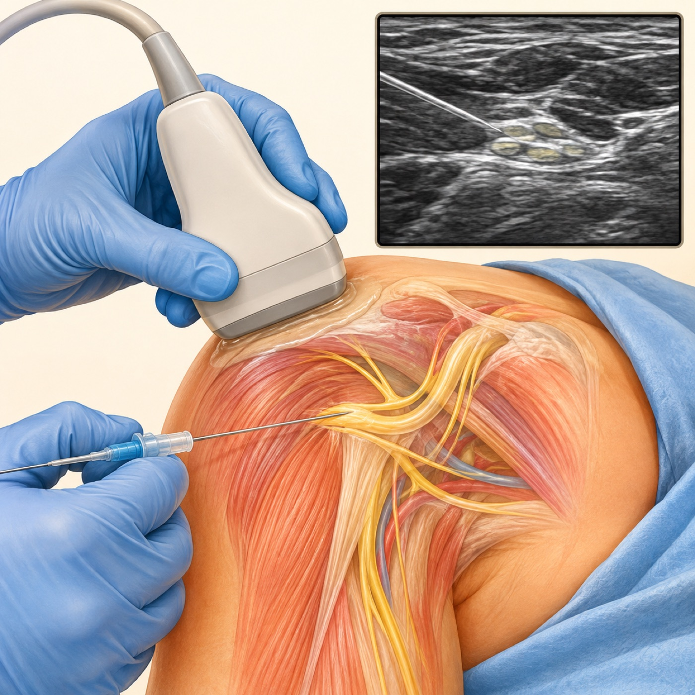

教材一覧


特典3
シミュレーション学習＆デブリーフィング・ガイド
少人数の勉強会で、30シナリオをチームで練習する方法。役割、クローズド・ループ・コミュニケーション、振り返りの型を学びます。
PDFを開く 2.5 MB
次のステップ
- クライシス・ポケットカードを印刷して、白衣のポケットに入れてください。
- 今週は学習カードを1日1シナリオ、声に出して練習してください。
- 施設のプロトコルと認知補助ツールの場所を、各カードのメモ欄に書き込んでください。
30の緊急場面を同じ6つの見出しでくり返し練習。気づく・応援を呼ぶ・チームで考える力を育てます。
少人数の勉強会で、30シナリオをチームで練習する方法。役割、クローズド・ループ・コミュニケーション、振り返りの型を学びます。
PDFを開く 2.5 MB